Roller Blackout
Bloqueo total de luz. Ideal para dormitorios y home cinema. Acabado prolijo, sin filtraciones.
Consultar telas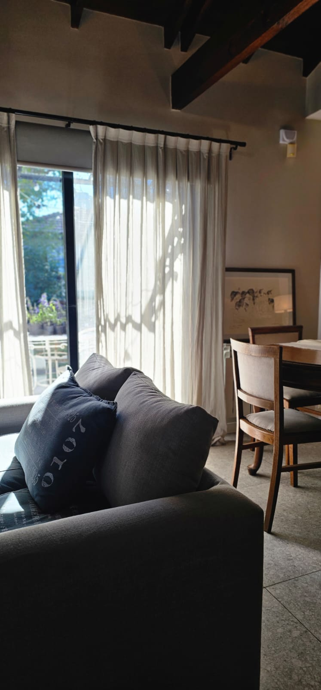
Cortinas & Cortinados a medida
Diseño, confección e instalación. Roller blackout, screen y telas naturales pensadas para cada ambiente.
Sobre Entre Telas
Trabajamos cada cortina como una pieza única: tomamos medidas en tu casa, te asesoramos sobre la mejor tela según luz, ambiente y estilo, y entregamos una confección impecable, instalada y lista para disfrutar.
Buscamos lo que pocos hacen: que la cortina caiga perfecta, que la tela acompañe la decoración y que el sistema dure años.
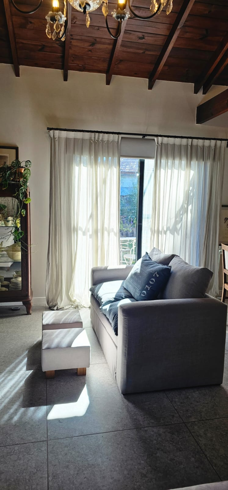
Productos
Cada producto se confecciona a medida con telas seleccionadas. Te asesoramos para elegir el sistema según la luz, la privacidad y el estilo del ambiente.
Bloqueo total de luz. Ideal para dormitorios y home cinema. Acabado prolijo, sin filtraciones.
Consultar telas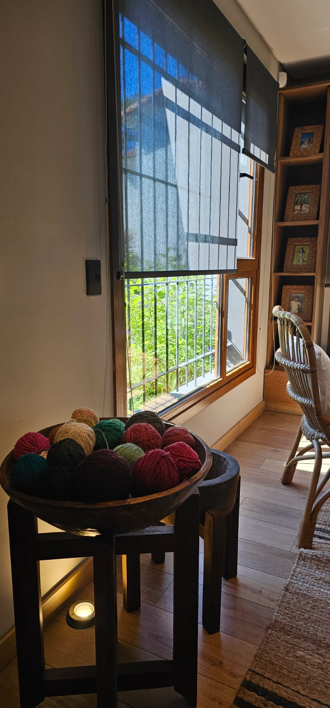
Filtra el sol y conserva la vista. La opción más versátil para living, oficina y comedores.
Consultar telas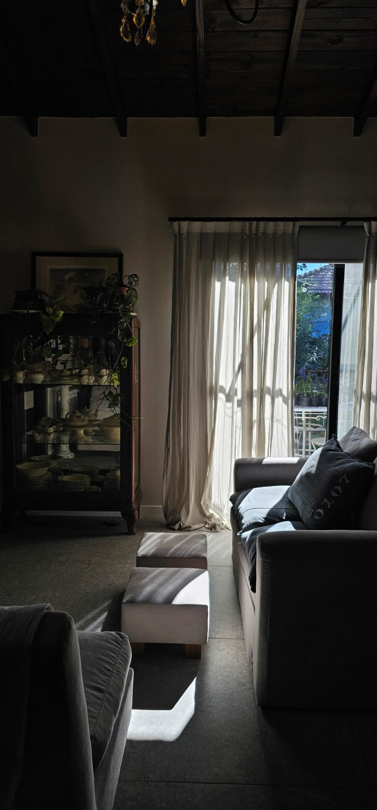
Caída elegante en lino, voile o gasas. Para sumar calidez y textura a cualquier ambiente.
Consultar telas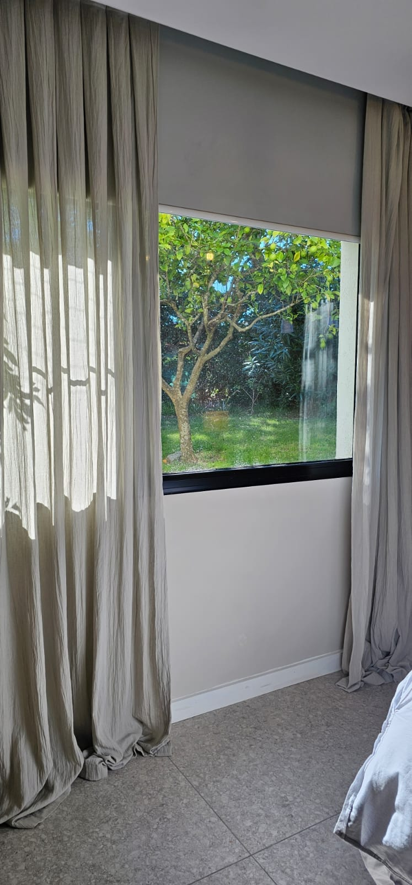
Roller blackout más cortinado de tela. Lo mejor de los dos mundos: oscurecimiento y diseño.
Consultar telas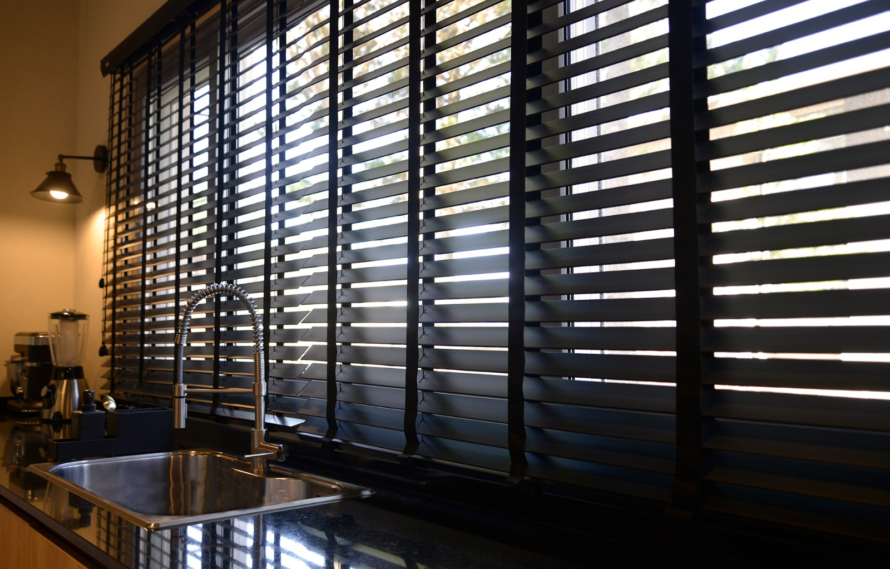
Tiras de madera que regulan la luz con precisión. Carácter, textura y privacidad en un mismo sistema.
Consultar venezianasPor qué Entre Telas
Tomamos medidas en tu casa para que la cortina caiga exacta. Nada de medidas estándar.
Trabajamos con proveedores premium en blackout, screen, lino y voile. Todas con muestras físicas.
La confección y el montaje los hace nuestro propio equipo. Un solo responsable, de principio a fin.
Te ayudamos a elegir según la luz, el ambiente y el estilo. Te decimos también lo que no comprar.
Galería
Una selección de instalaciones recientes. Cada espacio fue medido, confeccionado e instalado por nuestro equipo.
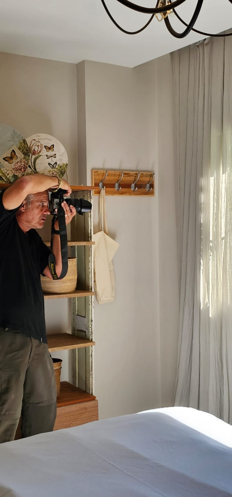
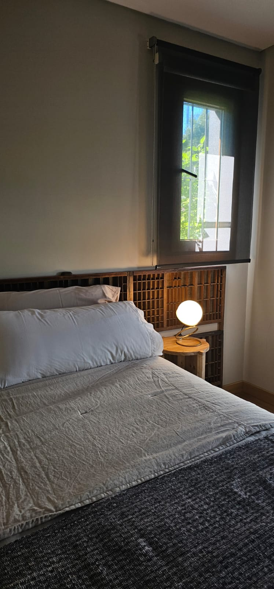


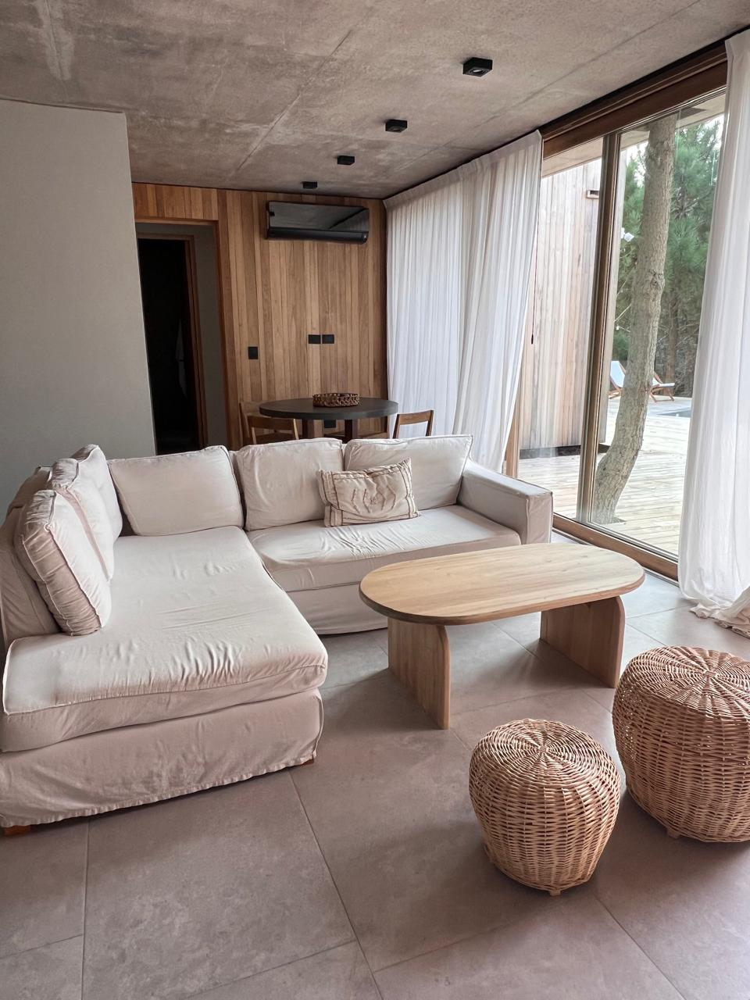
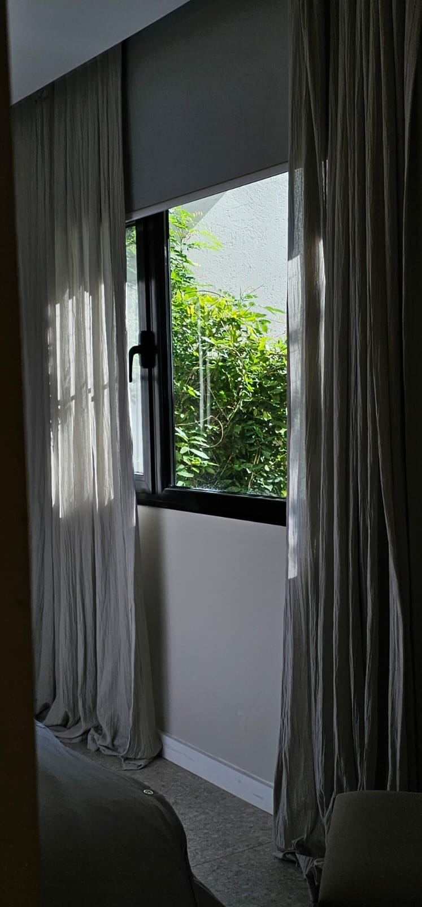
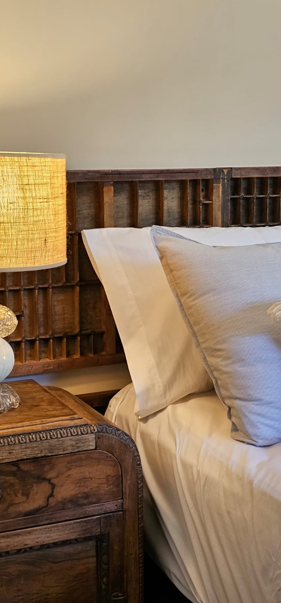
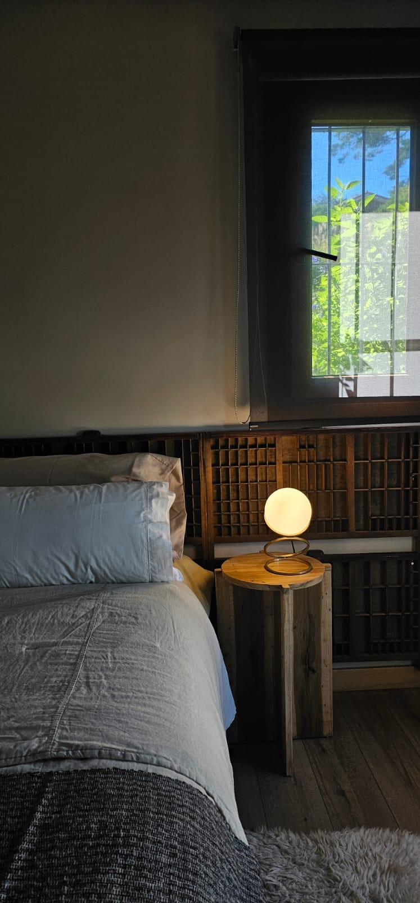
También en Entre Telas
Sábanas, acolchados, almohadones y fundas confeccionados con las mismas telas premium de nuestros cortinados. Dormitorios que hablan con un mismo lenguaje textil.
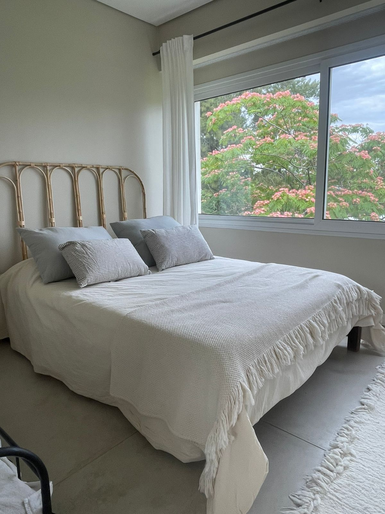
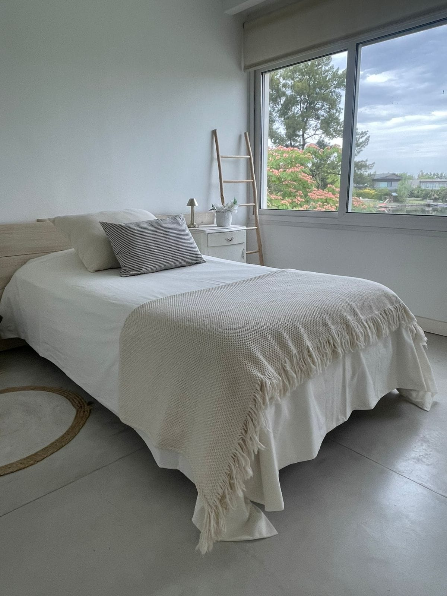
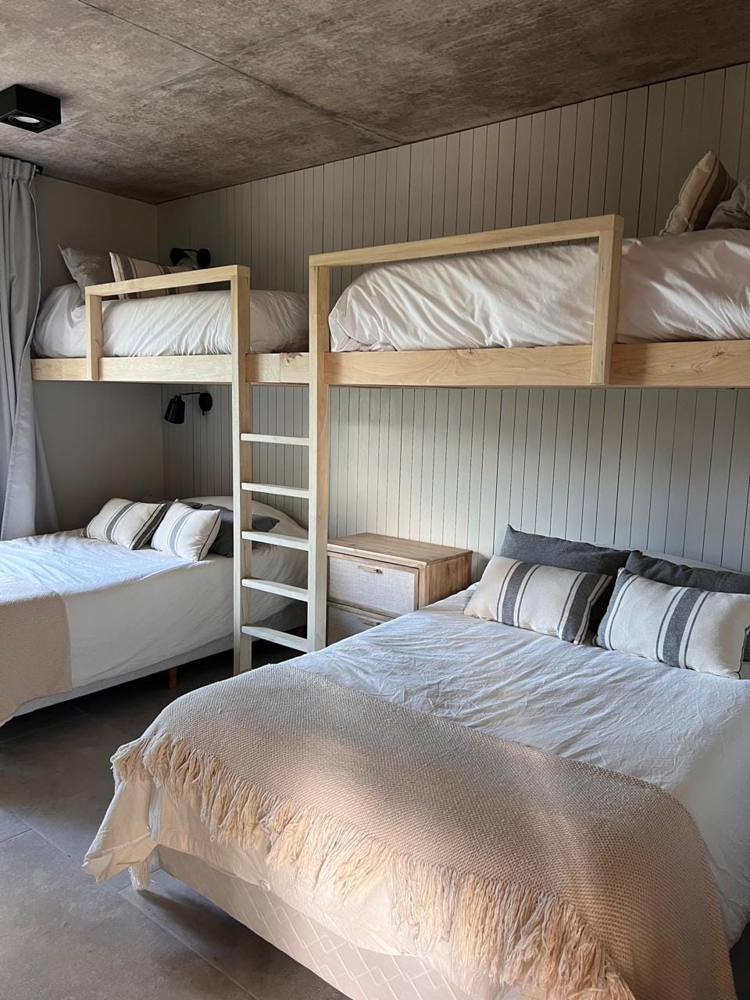
Cómo trabajamos
Nos contás por WhatsApp qué ambiente querés vestir. Te orientamos sobre opciones y rangos.
Coordinamos una visita sin cargo. Tomamos medidas, vemos la luz y llevamos muestras.
Te enviamos el detalle por escrito: telas, sistema, accesorios y plazos. Sin sorpresas.
Confeccionamos en taller propio e instalamos en tu casa. Te entregamos la cortina lista para usar.
Contacto
Escribinos por WhatsApp con una foto de la ventana, las medidas aproximadas y el estilo que te imaginás. En el día te contestamos.
Escribirnos por WhatsAppAtención de lunes a sábados.